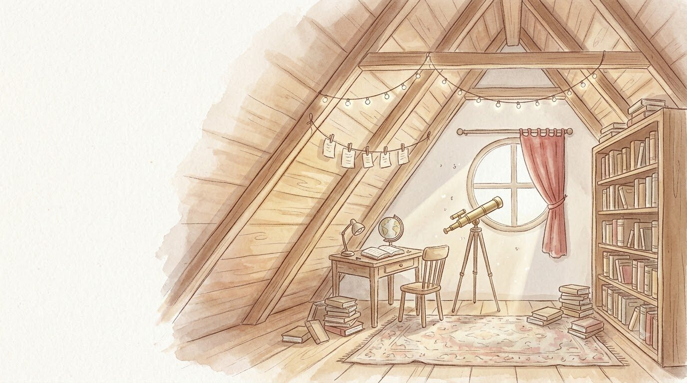
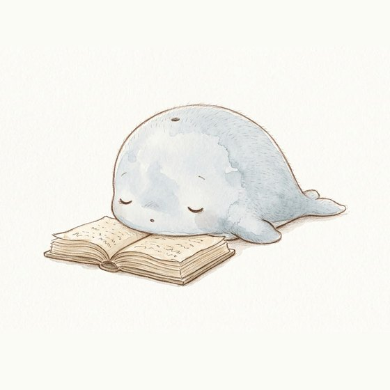
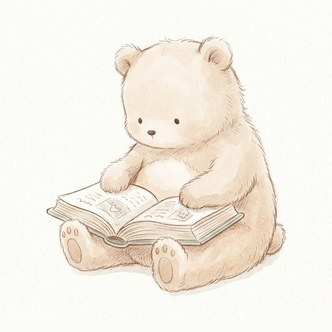
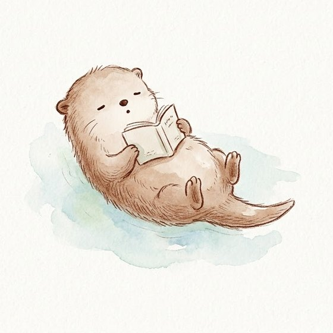
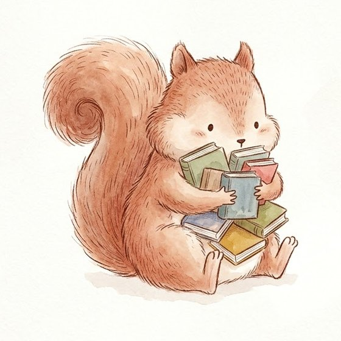
문헌정보학과 바이브 코딩 공모전
나는 어떤 책 읽는 동물일까?
독서 습관으로 나를 닮은 동물을 찾고,
이웃의 책장에서 다음 책을 만나는 서비스
문헌정보학과 202406224 홍현아
왜 만들었나
01
서점과 SNS는 모두에게 같은 목록을 보여 줍니다.
02
무엇을 좋아하는지 알아야 다음 책을 고를 수 있습니다.
03
사서의 상담을 더 많은 사람에게 닿게 할 방법이 필요합니다.
그래서, 사서가 읽어 주는 독서 성향 테스트를 만들었습니다.
아이디어
독서 습관과 끌리는 이야기를 묻는 질문 20개로 네 가지 축을 정합니다. 네 번 갈라지면 열여섯 가지 독자가 됩니다.
2 × 2 × 2 × 2 = 16
네 개의 축
서점에서 먼저 가는 매대, 책을 펼치는 이유, 여행 가방 속 한 권
작가 정주행, 시리즈물을 대하는 법, 관심 분야의 폭
책을 덮고 남는 것, 인물을 만나는 법, 친구에게 추천할 때 하는 말
명작과 화제작 중 무엇을 믿는지, 책을 발견하는 곳, 책장에 남기는 책
다락방 동물 도감
Google Flow로 직접 그렸습니다
S 이야기 K 지식 · D 몰입 W 탐험
E 감성 L 논리 · C 고전 N 신간
Google Flow로 직접 그렸습니다
프롬프트 예시 · 깊은 바다의 고래
a small round baby whale, pale blue-gray, lying on its belly with a thick old book open in front of it, eyes softly closed as if moved by the story, delicate hand-drawn illustration, thin sketchy warm brown colored-pencil outline, soft pale watercolor wash, fluffy fur drawn with fine short strokes, tiny dot eyes, very simple minimal face, plain off-white watercolor paper background, no text
동물마다 다른 부분 책을 펼친 채 엎드려, 이야기에 감동해 눈을 감은 아기 고래
16장 모두 같은 부분 갈색 색연필 선, 연한 수채, 점 눈, 흰 종이 배경
Flow가 만든 후보 2장
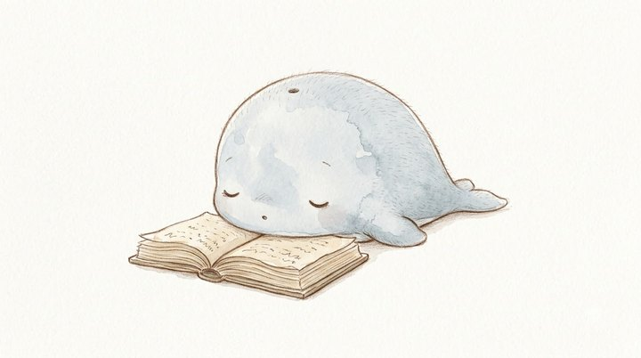
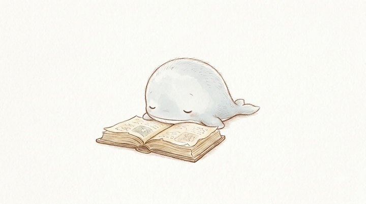
동물 16마리 × 후보 2장 = 32장, 다락방 배경 3장을 만들어 그중 18장을 썼습니다.
문헌정보학과의 연결
이웃들이 꽂은 책을 독자 유형(동물)별 서가로 모아 정리합니다.
사서가 묻듯, 습관과 취향을 묻는 질문 25개로 이용자를 이해합니다.
같은 동물 이웃의 책을 권하고, 상담실에서는 나만을 위한 상담 기록을 씁니다.
추천한 책마다 국립중앙도서관 검색으로 바로 이어 줍니다.
이용 흐름
점수 계산 ①
모든 답은 +1점 또는 −1점 축마다 다섯 개라 합이 늘 홀수, 동점이 생기지 않습니다.
취향 질문 5개는 따로 분위기·두께·결말·문체·전개는 동물을 바꾸지 않고 취향 카드에 담깁니다.
점수 계산 ②
한 축의 다섯 답을 더하면 −5점부터 +5점까지 홀수가 나옵니다. 결과 막대는 50% + 9% × 점수로 그립니다. 그래프는 답이 반반으로 갈릴 때 각 점수가 나올 확률입니다.
예) 다섯 개 모두 이야기 쪽
+5점 → 이야기 95% · 지식 5%
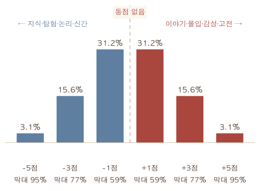
한 사람의 분석 예시
SDEC
알고리즘 검증 · 실제 이용자 데이터가 아닙니다
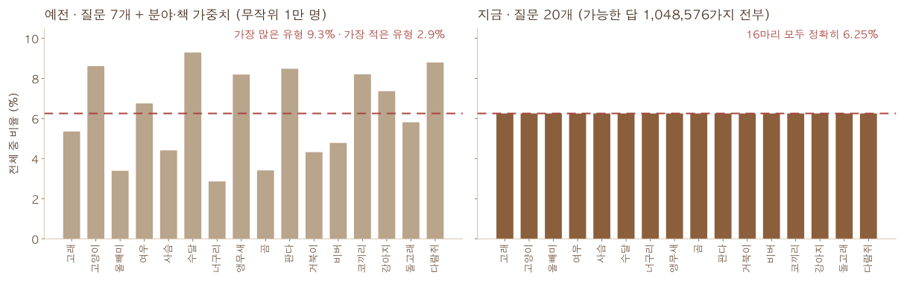
예전
분야·책 가중치와 질문 수가 축마다 달라, 무작위 응답 1만 개에서 가장 많은 유형과 적은 유형이 3배 넘게 차이 났습니다.
지금
축마다 같은 수, 같은 점수의 질문. 가능한 답 1,048,576가지를 모두 계산하면 16마리가 정확히 6.25%씩입니다.
서비스 화면
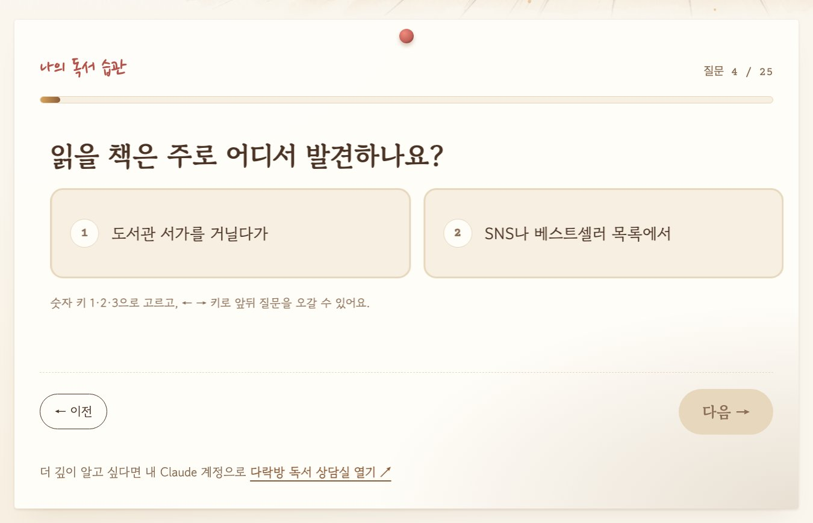
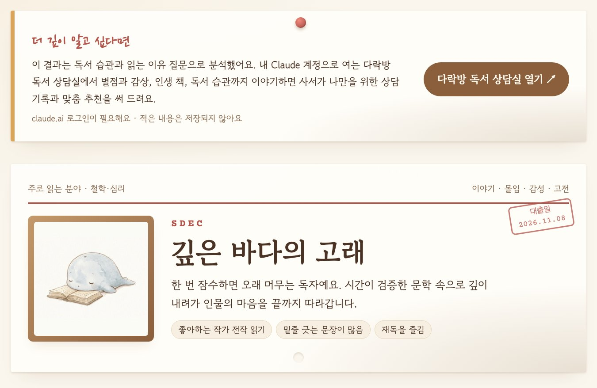
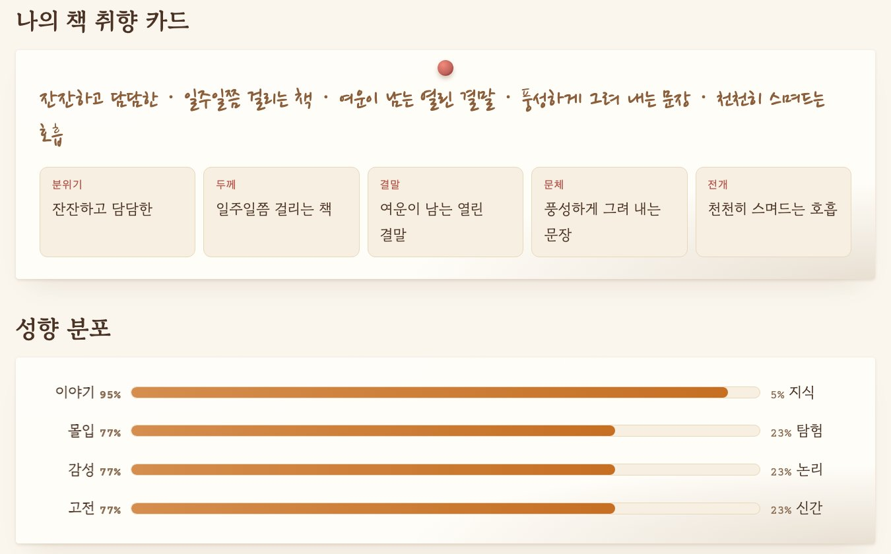
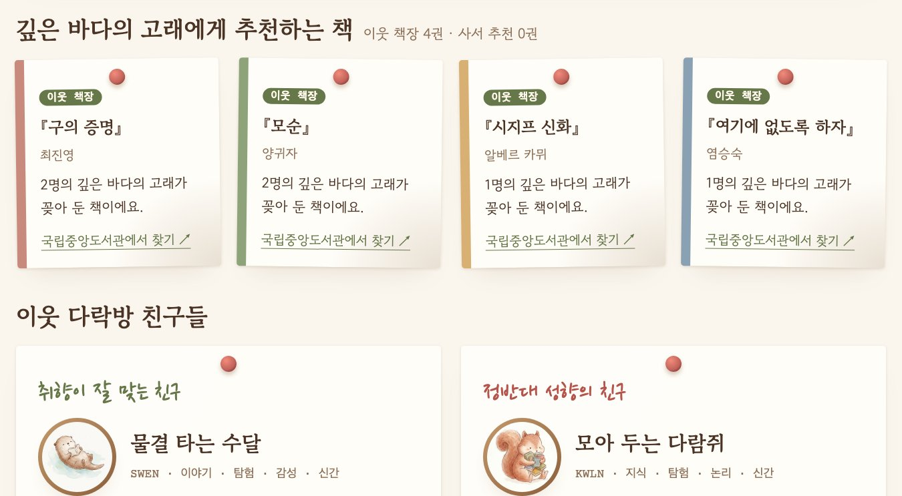
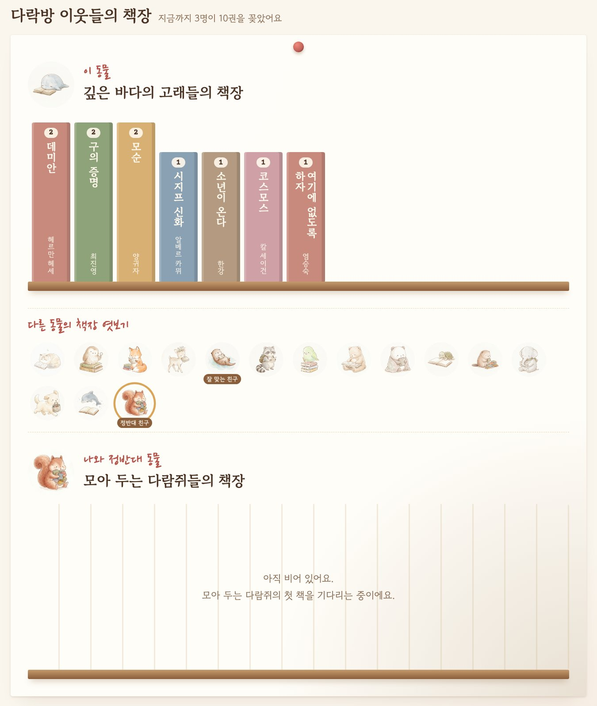
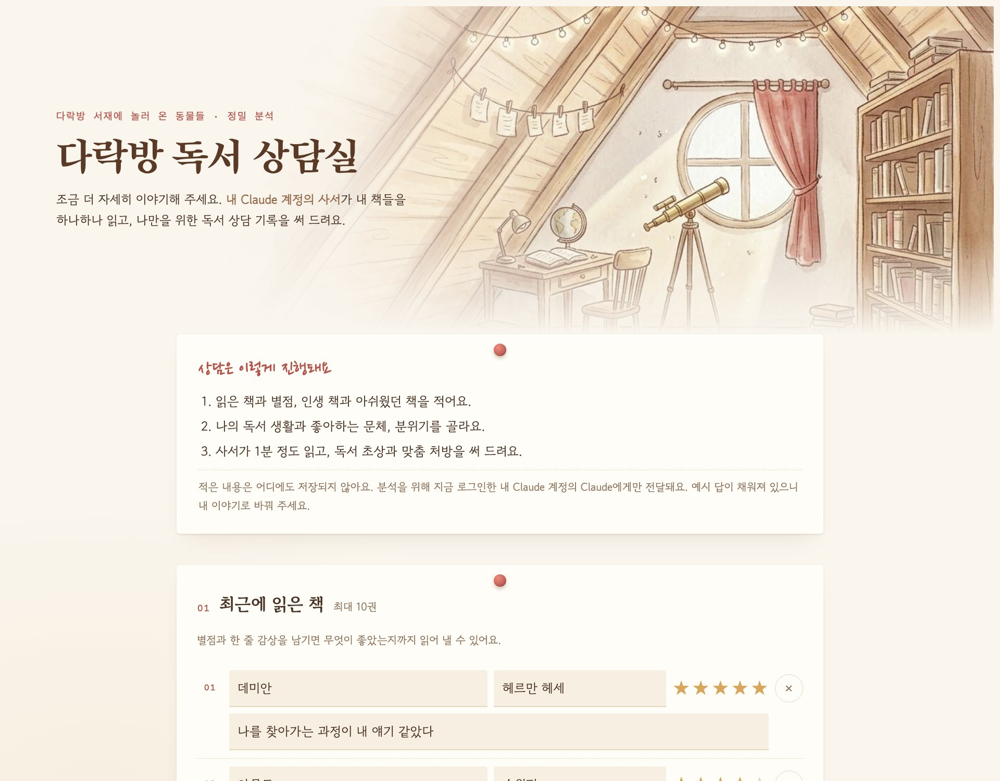
새 기능 · 이용자 데이터베이스
테스트 마지막에 내 책을 적고 동의하면 책장에 보탭니다.
도서명, 저자, 동물 유형만 한 줄씩. 이름과 이메일은 받지 않습니다.
같은 동물 이웃이 많이 꽂은 책부터 추천합니다. 책장이 비면 사서 추천으로 채웁니다.
부적절한 제목은 시트에서 그 줄을 지우면 1분 안에 사라집니다.
지금 이 순간의 책장 구글 시트에서 불러오는 중
–명이 –권을 꽂았어요
바이브 코딩으로 만든 과정
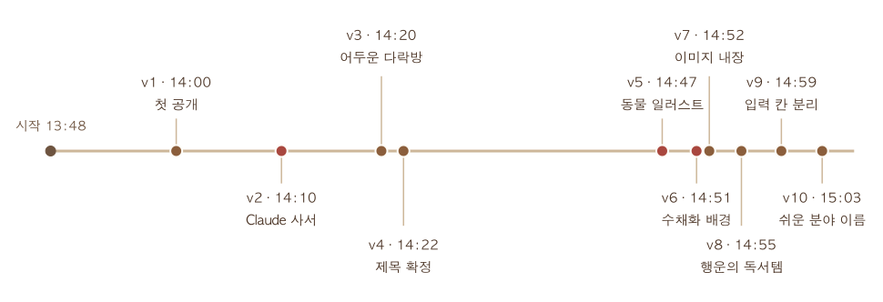
도구 · Claude Code 대화로 코딩 · Google Flow 일러스트 · Claude 페이지 속 사서 · 구글 시트 책장 저장
그 뒤에 더한 것 · 발표 슬라이드 · 이웃 책장과 추천 · 독서 상담실 · 질문 25개 설문과 한 질문씩 화면
외부 데이터의 벽
| 출처 | 확인한 것 | 결과 |
|---|---|---|
| Google Books | 키 없이 ‘데미안’ 검색 | 429 · 하루 한도 0 |
| Open Library | ‘소년이 온다’ 검색 | 1건 |
| Open Library | ‘불편한 편의점’ 검색 | 0건 |
| 배포 환경 | 페이지에서 외부 주소 호출 | 보안 정책상 막힘 |
해결 ①
남이 만든 목록 대신, 이웃들이 꽂은 책이 쌓이는 우리만의 책장(구글 시트).
해결 ②
독서 상담실에서는 방문자 본인 Claude가 어떤 책이든 읽고 상담 기록을 씁니다.
시행착오
문제
해결
책 제목에 기대지 않고 질문 20개로 동물을 정하고, 적은 책은 이웃 책장에 꽂아 추천에 씀
문제
해결
모두 ±1점, 축마다 5개. 가능한 답 전부에서 16마리가 정확히 같아짐
문제
해결
카드를 누르면 다음으로, 진행 막대와 이전 버튼, 숫자 키로도 답함
문제
해결
파일 경로에 기대지 않고 18장을 페이지 안에 직접 넣음
기술 구조
상담실 열기
서비스 구성
문 1 · 누구나
더 깊이
알고 싶다면
문 2 · 내 Claude 계정
왜 나눴나요? 일반 웹페이지는 방문자의 Claude 로그인을 쓸 수 없고, Claude 안의 페이지는 외부 저장소에 접속할 수 없습니다. 그래서 모두와 함께 쓰는 체험 페이지와, 나 혼자 깊이 상담받는 페이지로 역할을 나눴습니다. 상담실에 적은 내용은 저장하지 않습니다.
다음 단계 제작자의 API 키로 상담실과 이웃 책장을 한 페이지에서 잇기 (1회 약 4~140원)
서비스 운영 방안
1단계 · 지금
2단계 · 도서관과 함께
3단계 · 데이터 연결
가치
이용자
내 취향을 한눈에 보고, 이웃들의 진짜 책장과 ‘정반대 친구’의 책으로 늘 보던 목록 밖의 책을 만납니다.
도서관
이용자가 직접 채우는 책장이 쌓이며, 동물별 북큐레이션의 근거 데이터가 됩니다.
문헌정보학
분류, 참고면담, 독자 상담을 누구나 해 볼 수 있는 웹으로 옮겼습니다.
덤으로, 행운의 독서템
20 가지 물건 × 20 가지 색·무늬 × 8 가지 시간 = 3,200 가지 조합
당신의 다락방에는
어떤 동물이 놀러 왔나요?
지금 바로 해 보세요
독서 상담실 · claude.ai/artifact/DmqLE6gvBbLZoa9okZhq62